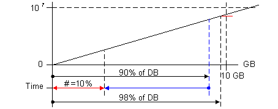

Trend Data Storage
Recorded trend data can be stored in three different locations:
- Offline Trendlog Objects: Offline trend data is saved in the automation station.
- Online Trendlog Objects: Contains the online trend data recorded and saved in the management station.
- Archived Trend Database (not in version 2.0): Contains all recorded trend data moved previously to the archive database.
Offline Trendlog Objects
Offline trend data can be recorded and saved by Trendlog objects within the automation and control system even when the management station is not connected.
The recorded data can then be saved in the trend database. Offline trend data can be retrieved and displayed in the trends.
Online Trendlog Objects
Data recorded by online trending and saved to the trend database (for example, using save continuously) can be retrieved and displayed in the trends.
Online Trendlog objects record data also when the Trend View is closed.
Database Storage Capacity
In the database, 10 GB is saved for the SQL Server Express and 250 GB of historical data for SQL-Server. Once 90% of the database size is reached, 10% of the oldest data entries are deleted.
This 10% of data always refers to the entire time axis for the collected data. Therefore, it cannot be exactly determined how many entries or the database size that is actually deleted.
Additional incoming entries are rejected if the 10% of data entries cannot be deleted before reaching 98% of the database size.

The data amount is comprised of the following:
- System activities
- Alarm messages
- Trend data
Change to Daylight Savings Time
- Date and time data is saved in UTC format. Entries are in double for one hour when setting back to normal time. In this case, the curve displays using both values.
When switching to daylight savings time, no value displays in this hour and the displayed line is straight between the two measured values. - A system message
Anomalyis generated when changing times that must be acknowledged.